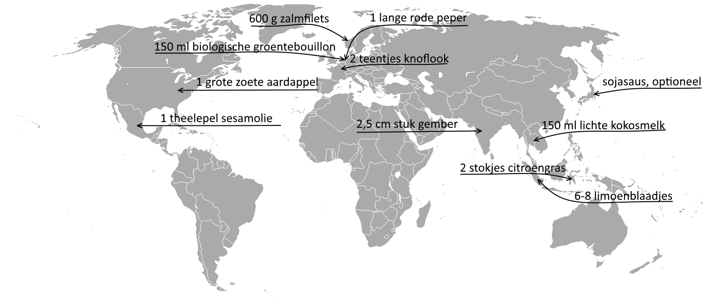

Hoofdgerecht: Asian salmon & sweet potato traybake

- 1 grote zoete aardappel
Zoete Aardappelen komen uit Covington U.S.A. U.S.A. is een centrum land. In Nederland is dit een seizoensproduct. Zoete Aardappelen worden niet in Nederland verbouwd.
- 2 stokjes citroengras (Sereh)
Citroengras komt uit Indonesië. Indonesië is een semi-periferie land. Dit is geen seizoensproduct Citroengras word niet in Nederland verbouwd.
- 2,5cm stuk gember
Gember komt uit India. India is een periferie land. Gember is het hele jaar verkrijgbaar. Gember word niet in Nederland verbouwd.
- 2 teentjes knoflook
Knoflook teentjes komen uit Frankrijk. Frankrijk is een centrum land. Knoflook vind je het hele jaar door in de schappen van de supermarkt. Knoflook word ook in Nederland verbouwd.
- 1 theelepel sesamolie
Sesamolie komt uit Mexico en is gemaakt van sesamzaden. Mexico is een semi-pereferie land. Dit is geen seizoensproduct. Sesamzaden worden niet in Nederland verbouwd.
- 150ml biologische groentebouillon
Groentebouillon komt uit Nederland. Nederland is een centrumland. Dit is geen seizoensproduct. Diverse groenten worden wel in Nederland verbouwd.
- 150ml lichte kokosmelk
Kokosmelk komt uit Thailand. Thailand is een semi-pereferie land. Dit is geen seizoensproduct. Kokosmelk word niet in Nederland verbouwd.
- 6-8 limoenblaadjes
Limoenblaadjes komen uit Maleisië. Maleisië is een semi-pereferie land. Dit geen seizoensproduct limoenblaadjes worden niet in Nederland verbouwd.
- 1 lange rode peper
Rode pepers komen uit Nederland. Nederland is een centrumland. Rode peper is een seizoensproduct en word geoogst tussen maart en september. Rode peper worden wel in Nederland verbouwd.
- 600g zalmfilets, van duurzame oorsprong
Zalmfilets komen uit Noorwegen. Noorwegen is een centrumland. Zalm word veel gevangen in de Noordzee aan de kust dus ook veel bij Nederland. Zalm is een seizoensproduct. Zalm word gevangen tussen juli en september.
- sojasaus, optioneel
Sojasaus komt uit Japan. Japan is een centrumland. sojasaus word gemaakt van sojabonen, die niet massaal in Nederland worden gekweekt. Soja is geen seizoensproduct.
Back